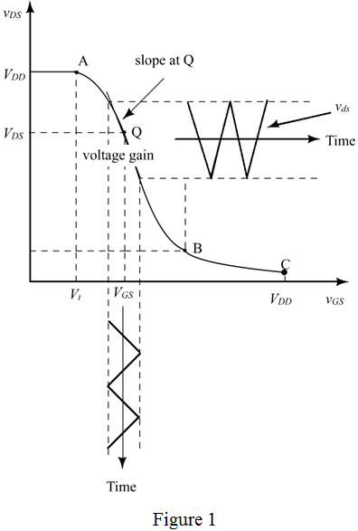

Step 1:
(a)
Refer to Figure 5.29 (a) in the textbook for the circuit diagram.
Draw the transfer voltage characteristics of the circuit.

Step 2:
The coordinates of two end points of the saturation region segment of the amplifier are,
Point A:
The bias voltage is,
Write the expression for the drain to source voltage.
Calculate the drain to source voltage when
Write the expression for drain current.
Substitute for  .
.
The overdrive voltage is, . Therefore,
Therefore, the point A of the saturation region segment is, .
Step 3:
For , the transistor is not ON, . Point  is when and the transistor turns ON. The
is when and the transistor turns ON. The  current increases and decreases when increases. The output voltage
current increases and decreases when increases. The output voltage  decreases to the point that it is below
decreases to the point that it is below  by volts.
by volts.
At this point , the MOSFET enters the triode or saturation region.
The drain current  is,
is,
Or,
Equate the both the equations.
Simplify further.
Step 4:
Find the roots to the equation.
Therefore, the gate to source voltages is,
Step 5:
Calculate the current  .
.
Calculate the drain to source voltage.
Therefore, the point B of the saturation region segment is, .
Step 6:
(b)
If the amplifier is biased to operate with an overdrive voltage of ,
Find the current, 
Consider the following.
Calculate the drain current.
Therefore, the drain current is, .
Find the value of 
Step 7:
At point Q:
From the graph, the voltages are nothing but .
Calculate the value of  .
.
Therefore, the point Q is, .
The incremental gain  at this bias point is,
at this bias point is,
Therefore, the incremental gain is, .
Step 8:
(c)
Calculate the largest amplitude value of the sine wave.
Therefore the largest amplitude of the sine wave is, .
Consider the following.
Then the value of
The maximum drain to source voltage is,
Therefore the output voltage is, .
Find the gain implied by this amplitude.
Therefore, the value of the gain is, .
Step 9:
Calculate the incremental percentage gain.
Therefore, the gain is different from the incremental gain by .
Thus, this gain is different from the incremental gain calculated in part (b).
This difference is due to the fact that the segment of the voltage transfer curve considered here is not perfectly linear.